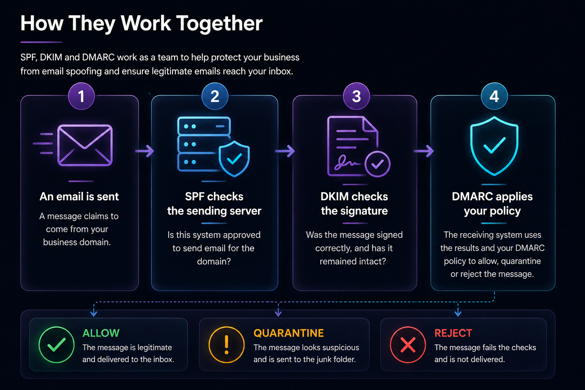

Why Does It Matter?
Email spoofing is one of the easiest ways criminals trick people. Without the right protection, someone could send a message that appears to come from your business even though they have nothing to do with it.
accounts@yourcompany.co.uk
That can lead to invoice fraud, customers being misled, damage to your reputation and genuine emails being treated as spam.
SPF: Your Approved Sender List
SPF stands for Sender Policy Framework.
Think of it as a guest list. It tells receiving mail systems which servers are allowed to send email for your domain.
If your business uses Microsoft 365, your SPF record normally tells the world that Microsoft is an approved sender. If a message comes from somewhere else, the receiving system can treat it as suspicious.
- ✓Identifies approved sending services
- ✓Helps stop basic domain spoofing
- ✓Supports better email reputation and delivery
DKIM: A Digital Signature
DKIM stands for DomainKeys Identified Mail.
Think of it like a tamper-evident seal. When an approved email service sends your message, it adds a hidden digital signature.
The receiving system checks that signature against a public record in your DNS. If the message has been altered on the way, the signature will not validate correctly.
- ✓Confirms the message was signed by an approved service
- ✓Shows whether the message was altered in transit
- ✓Improves trust in legitimate business email
DMARC: The Policy and Reporting Layer
DMARC stands for Domain-based Message Authentication, Reporting and Conformance.
DMARC looks at SPF and DKIM, checks whether the results align with the visible From address, and tells receiving systems what to do when a message fails.
Monitor what is happening without asking receiving systems to block messages.
p=quarantine
Ask receiving systems to treat failing messages as suspicious, often by sending them to Junk.
p=reject
Ask receiving systems to reject messages that fail the checks.
DMARC can also send reports showing which services are sending email using your domain. Those reports are useful when checking that legitimate systems have not been missed.
How They Work Together

Do You Need All Three?
Yes. They perform different jobs and are strongest when used together.
- ✓SPF identifies approved sending systems
- ✓DKIM signs legitimate messages
- ✓DMARC applies the policy and provides reporting
Using only one or two leaves gaps. A properly configured set gives receiving mail systems much more confidence in your legitimate messages.
A Common Myth
Many business owners assume that buying Microsoft 365 means SPF, DKIM and DMARC are automatically completed.
Microsoft provides the email platform and the tools, but your domain still needs the correct DNS records and configuration. Third-party services such as invoicing platforms, website systems or marketing tools may also need to be included properly.
That is why email authentication should be planned, tested and monitored rather than copied from a generic example.
Final Thoughts
Most people never notice SPF, DKIM and DMARC when they are working properly. That is a good thing.
They operate quietly in the background, helping genuine email reach inboxes and making it harder for criminals to impersonate your business.
It is a relatively small piece of technical configuration that can make a significant difference to security, trust and email delivery.